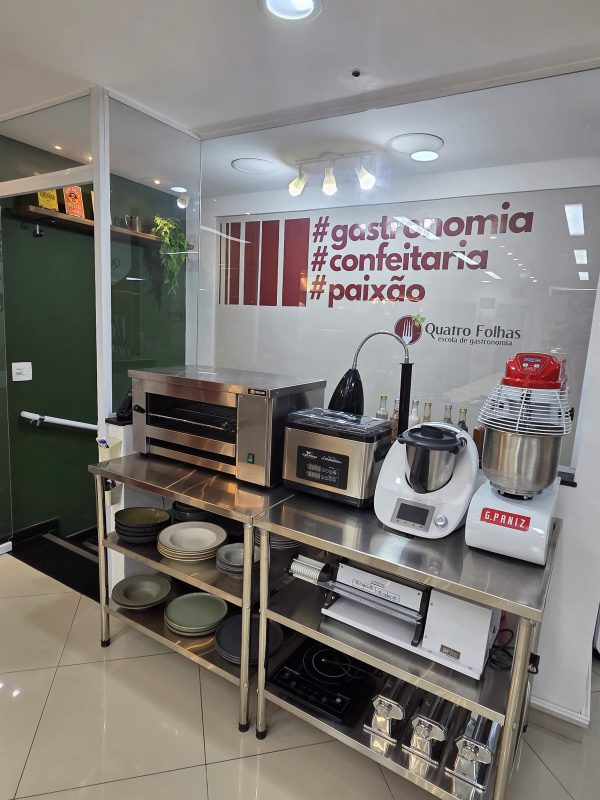
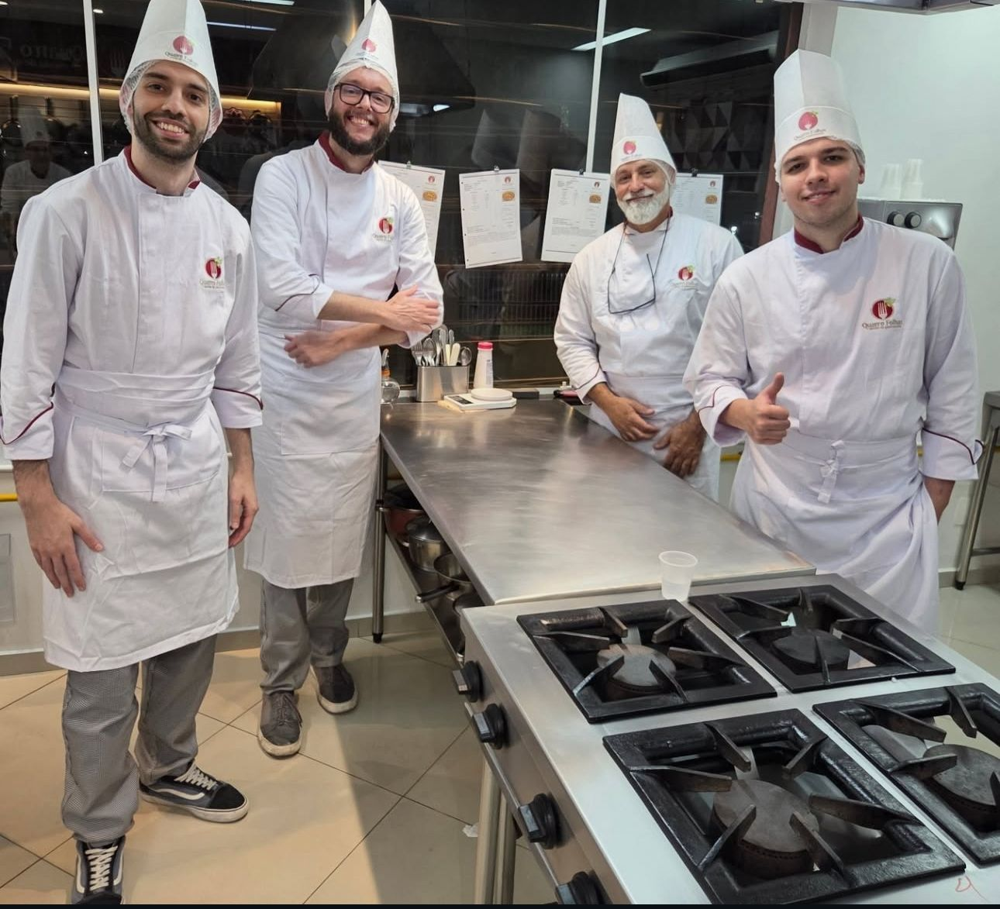
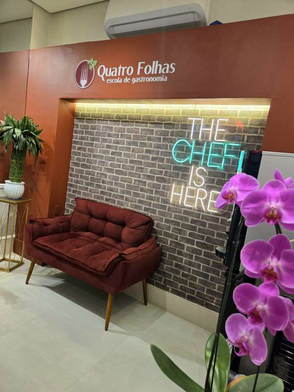

Professores pós-graduados
Docentes com formação acadêmica e vasta experiência no mercado de trabalho.
Aprenda, viva e transforme a gastronomia em experiência.
#Gastronomia#Confeitaria#paixão
Escolha seu caminho
Cursos práticos para atuar, empreender ou se aprofundar em gastronomia e confeitaria.
Cursos profissionalizantes 02Aulas temáticas para aprender receitas, descobrir sabores e viver uma experiência diferente.
03Mini Chef, festas infantis gastronômicas e projetos educativos para escolas particulares.
04Team building, parcerias, ativações, Locação de cozinha, gravações e workshops.
Diferenciais
Professores pós-graduados, cozinha altamente equipada, turmas de até 16 alunos, portal do aluno, app e vivência internacional ampliam a jornada de formação.
Docentes com formação acadêmica e vasta experiência no mercado de trabalho.
Ambiente profissional para aprender técnica, rotina de bancada e prática com mais segurança.
Mais proximidade, acompanhamento e espaço para evoluir durante as aulas.
vivência mão na massa para desenvolver técnica, segurança e rotina profissional desde o início.
vivência internacional em Buenos Aires para ampliar repertório, cultura e visão de mercado.
Materiais, comunicados, pagamentos e certificados organizados para apoiar a jornada.
Mídia e gravações
A cozinha da Quatro Folhas já recebeu TV, streaming, realities, marcas e produções gastronômicas que reforçam a força do espaço.
Um marco de reconhecimento especialmente forte para quem busca confeitaria profissional.
Ver hist?ricoA escola já recebeu produções que conectam gastronomia, entretenimento e marcas.
Conhecer produçõesEstrutura profissional para campanhas, realities, conteúdos, fotos e experiências.
Ver LocaçãoCursos
Da primeira aula é formação profissional, cada curso combina técnica, prática e acompanhamento em uma cozinha escola estruturada.
formação para desenvolver técnica, repertório e segurança para atuar na cozinha.
Conhecer cursoPrecisão, criatividade e prática para transformar confeitaria em profissão ou negócio.
Conhecer cursoEspecialização em bolos e doces finos, com técnicas de montagem, acabamento e venda.
Conhecer cursoUm curso direto para ganhar confiança, repertório e autonomia na cozinha.
Conhecer cursoCurso rápido com preparos mais leves, práticos e alinhados a uma rotina equilibrada.
Conhecer formatoCurso para quem quer começar na cozinha e também para empresas que precisam treinar equipes e funcionários.
Conhecer cursoAulas práticas para aprofundar técnica, repertório e execução em cozinha profissional.
Consultar turmaEspecialização para evoluir em técnica, precisão, montagem e finalização em confeitaria.
Consultar turmaAprofundamento em bolos, acabamento, montagem e apresentação com alto valor percebido.
Consultar turmaAula gastronômica em Buenos Aires para alunos dos cursos profissionalizantes, em parceria com a EAG.
Ver vivênciaCurso infantil para crianças aprenderem gastronomia de forma segura e divertida.
Conhecer Mini ChefUm voucher para presentear com aula temática ou contribuir com um curso.
Comprar voucherAulas temáticas
Aulas práticas para aprender novos preparos, viver bons momentos e aproveitar a gastronomia sem precisar ser profissional.
 Inscrições abertas
Inscrições abertasUma experiência prática para aprender técnicas de massas frescas e seus acompanhamentos.
 Últimas vagas
Últimas vagasPreparos elegantes para servir, compartilhar e surpreender em ocasiões especiais.

Inscrições abertasUma noite de cozinha, encontro e mesa com sabores clássicos da gastronomia italiana.
Crianças e Escolas
Atividades gastronômicas que despertam autonomia, criatividade e confiança, em um ambiente seguro e acolhedor.

Crianças colocam a mão na massa e descobrem o prazer de cozinhar de forma prática, divertida e cheia de significado.
Uma comemoração saborosa e criativa, com atividades culinárias que encantam crianças e adultos.
Conhecer festa
Projetos personalizados que levam a gastronomia para o dia a dia escolar, de forma educativa e inspiradora.
Montar projetoEmpresas e Marcas
A Quatro Folhas recebe empresas e parceiros para ações que unem cozinha, relacionamento, conteúdo e experiência.
Dinâmicas gastronômicas para aproximar equipes e criar momentos de colaboração.
Ver formato
Aulas, ativações, eventos e conteúdos que conectam marcas ao universo da gastronomia.
Ver parcerias
Espaço equipado para gravações, workshops, fotos, eventos e produções gastronômicas.
Ver locação
Carreira
Conectamos alunos e ex-alunos a oportunidades no mercado gastronômico e ajudamos empresas a encontrar profissionais preparados.
Banco de oportunidades
A Escola
Desde 2015, a Quatro Folhas forma pessoas por meio da gastronomia com prática, técnica e acolhimento.
Vida na Quatro Folhas
A unidade mostra a força da marca: cozinha equipada, alunos uniformizados, equipe em aula e ambientes preparados para receber.


Contato
Fale com a Quatro Folhas para estudar, celebrar, reunir sua equipe, criar uma parceria ou acessar materiais de aluno.